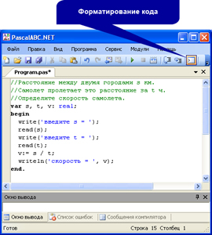

При решении любой задачи человеку приходится выполнять следующие действия:
- определение исходных данных (что дано в задаче);
- определение результатов (что нужно получить);
- обработка исходных данных в соответствии с известными правилами так, чтобы получить результат.
Применяя данные правила к решению задачи по программированию, получим следующие этапы решения задачи:
1. Определение исходных данных.
2. Определение результатов.
3. Составление алгоритма решения задачи.
4. Определение типов данных для переменных, используемых при реализации алгоритма.
5. Написание программы.
6. Тестирование программы.
7. Анализ результатов. (Рассмотрите пример 15.1.)
Тестирование программы — проверка правильности работы программы при разных наборах исходных данных.
Для каждой задачи, рассматриваемой далее, будем описывать все вышеперечисленные этапы.
15.1. Вычисление значения арифметического выражения
Пример 15.2. Даны x, y, z. Напишем программу для вычисления значения выражения
Этапы выполнения задания:
1. Определение исходных данных: переменные x, y, z.
2. Определение результатов: переменная a.
3. Алгоритм решения задачи:
3.1. Ввод исходных данных.
3.2. Вычисление значения выражения.
3.3. Вывод результата.
4. Описание переменных.
Все переменные, определенные для решения задачи, имеют тип real.
В приведенном примере перед каждой командой ввода записана команда вывода с пояснениями о том, значение какой переменной нужно вводить.
15.2. Использование языка программирования для решения задач
Пример 15.3. Напишем программу для решения геометрической задачи. Задан квадрат с длиной стороны a. Требуется найти его площадь и периметр.
Этапы выполнения задания:
1. Определение исходных данных: переменная а (длина стороны).
2. Определение результатов: переменные S (площадь) и P (периметр).
3. Алгоритм решения задачи:
3.1. Ввод исходных данных.
3.2. Вычисление значений площади производится по формуле S = a2, а периметра — по формуле P = 4a.
3.3. Вывод результата.
4. Описание переменных:
Все переменные, определенные для решения задачи, имеют тип real.
Обратите внимание на запись операторов присваивания, соответствующих математическим формулам.
Пример 15.4. Напишем программу для решения физической задачи. Расстояние между двумя городами составляет s км. Самолет пролетает это расстояние за t ч. Определите скорость самолета.
Этапы выполнения задания:
1. Определение исходных данных: переменные s (расстояние) и t (время).
2. Определение результатов: переменная v (скорость).
3. Алгоритм решения задачи:
3.1. Ввод исходных данных.
3.2. Согласно формуле расстояния: s = vt. Отсюда выразим v:
3.3. Вывод результата.
4. Описание переменных:
Все переменные, определенные для решения задачи, имеют тип real.
При написании программ обращайте внимание на форматирование их текста:
- в первой позиции на экране пишут только слова var, begin end, а остальные со сдвигом на 2—4 позиции вправо;
- если в программе несколько частей, то их можно отделить друг от друга пустой строкой.
Выполнение этих правил повышает читаемость программы.
В программе можно использовать комментарии — текст, который не анализируется при запуске программы на выполнение.
Текст после символов // считается комментарием и выделяется зеленым цветом (пример 15.5).
|
Пример 15.1. Решение задач по физике принято оформлять так, как показано ниже. Дано:
Решение Силы тяжести, действующие на бруски, равны:
Массы брусков равны:
Отношение сил:
Ответ: Слева записывается, что дано и что нужно получить, справа — последовательность действий, приводящая к решению задачи. Аналогично можно оформлять решения задач по химии, геометрии. Этапы решения задачи по программированию можно представить следующим образом: |
 — ?
— ?


|
Пример 15.2. 5. Программа:
6. Тестирование программы. Запустите программу и введите значения: x = 2, y = 3, z = 1. Результат работы программы должен быть следующим:
7. Проверка правильности вычислений может быть выполнена на калькуляторе. |

|
Пример 15.3. 5. Программа:
6. Тестирование программы. Запустите программу и введите значение a = 5.2. Результат работы программы должен быть следующим: 7. Проверка правильности вычислений может быть выполнена на калькуляторе. Пример 15.4. 5. Программа:
6. Тестирование программы . Запустите программу и введите значения s = 3550 и t = 4. Результат работы программы должен быть следующим: 7. Проверка правильности вычислений может быть выполнена на калькуляторе. Пример 15.5. Программа с комментариями и отформатированным кодом:  В комментариях удобно записывать условие задачи и пояснения к командам. |

1 Что понимают под тестированием программы?
2 Для чего можно использовать комментарии?
3 Расставьте в правильном порядке этапы решения задачи по программированию.
| Написание программы. | ||
| Составление алгоритма решения задачи. | ||
| Анализ результатов. | ||
| Тестирование программы. | ||
| Определение типов данных для переменных, используемых при реализации алгоритма. | ||
| Определение результатов. | ||
| Определение исходных данных. |
-
1 Даны x, y, z. Напишите программу
для вычисления значения арифметического выражения.
- 1. Найдите длину окружности и площадь круга заданного радиуса.
- 2*. Найдите угол при основании равнобедренного треугольника, если известен угол при вершине.
- 1. Велосипедист едет с постоянной скоростью v км/ч. За сколько минут он проедет расстояние в s км?
- 2*. Автомобиль проходит первую часть пути длиной s1 км за t1 мин, участок пути длиной s2 км за t2 мин и участок длиной s3 км за t3 мин. Найдите среднюю скорость автомобиля, выраженную в км/ч.
- 1. В организме человека на долю атомов кислорода приходится 65 % от массы тела. Найдите массу атомов кислорода для своей массы тела.
- 2*. Масса одного атома кислорода равна 26.56 ∙ 10−27 (это число в программе на языке Pascal записывается так: 26.56E-27, буква E — английская). Определите, сколько атомов кислорода содержится в вашем теле.
 |
 |
 |
2 Напишите программу для решения геометрической задачи.
3 >Напишите программу для решения физической задачи.
4 Напишите программу для решения химической задачи.